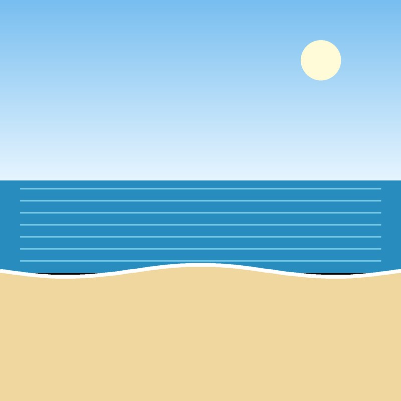
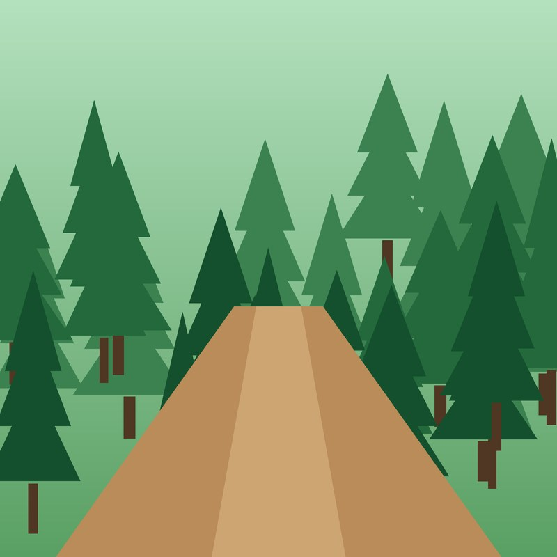
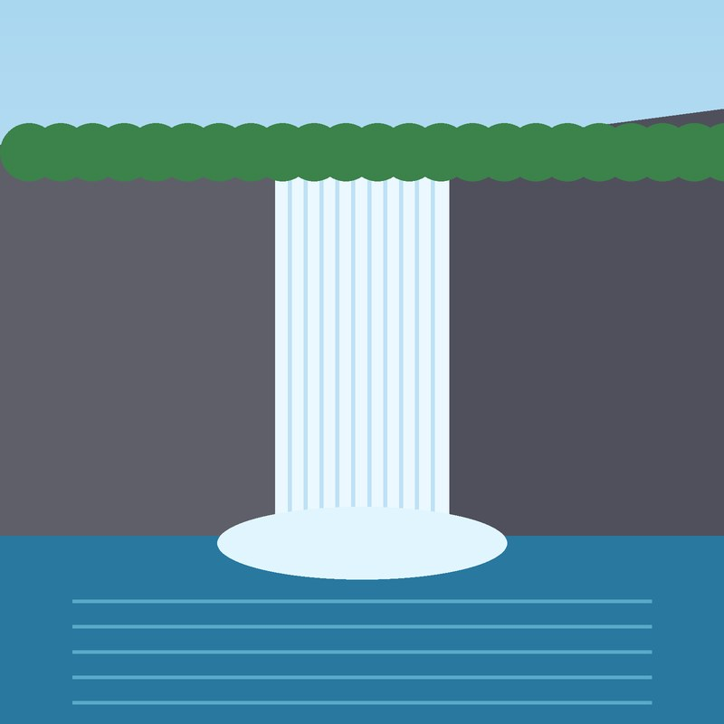
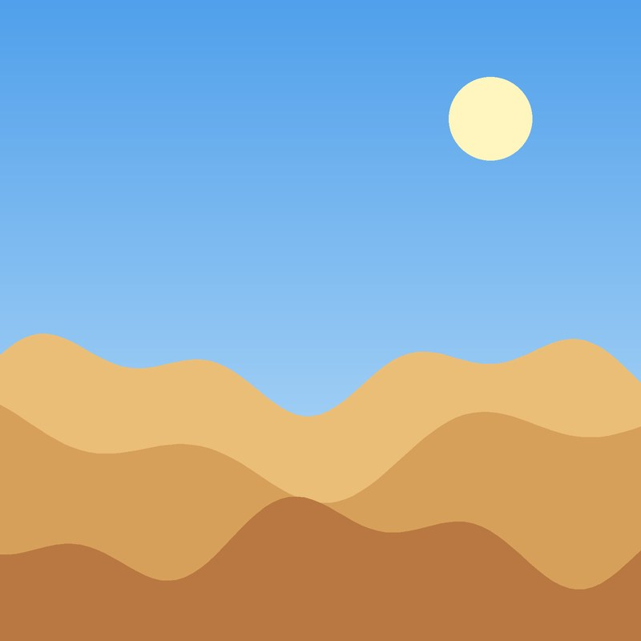
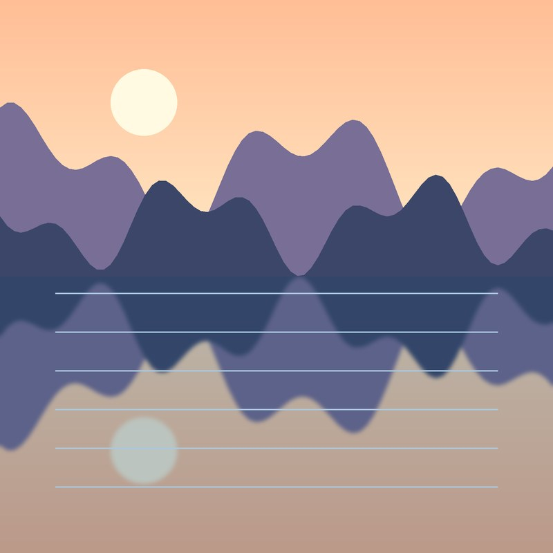
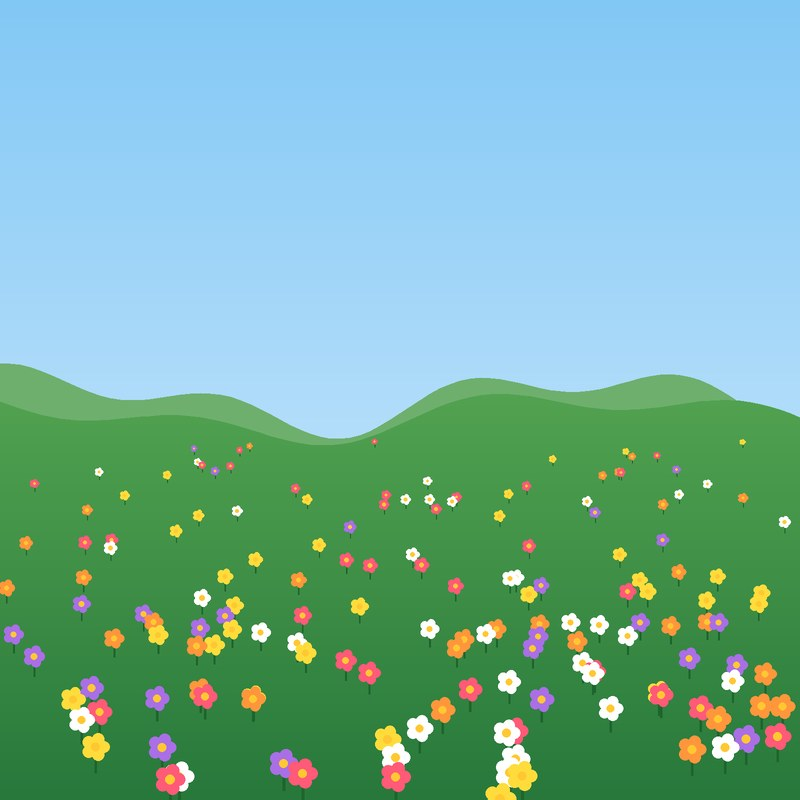

Welcome to my small gallery celebrating the quiet beauty of the natural world. Each illustration shows a place where I feel calm, from misty mountain mornings to starlit hillsides.
This page is built mobile-first and adapts to your screen size, your preferred color scheme and your motion settings. Scroll through the gallery and use the link at the bottom to jump back to the top.





